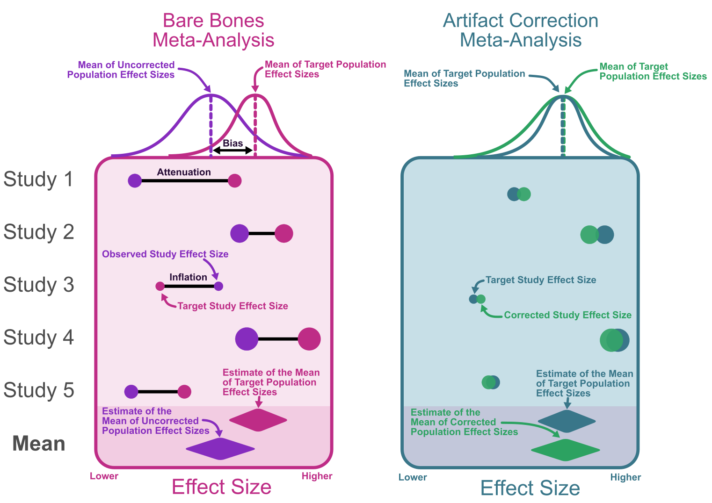

Artifact correction meta-analysis, also referred to as psychometric meta-analysis, is a form of meta-analysis where effect sizes are systematically corrected for sources of bias. These sources of bias have been discussed in previous chapters 4-10. Methodology for conducting artifact correction style meta-analyses were originally pioneered by Frank Schmidt and John Hunter (Hunter and Schmidt 1990; Schmidt and Hunter 1977) and then reviewed more recently by Brenton Wiernik and Jeffrey Dahlke (Wiernik and Dahlke 2020). There has also been powerful R packages developed to aide in the application of artifact correction meta-analyses that we have used in previous chapters (Dahlke and Wiernik 2019). You will notice that in this section, we do not discuss standardized mean differences. This is due to the fact that the artifact correction model is designed for pearson correlations, in order to use this method for standardized mean differences, convert to pearson correlations using the methods described in chapter 11, and then use the correction methods used below. Once you apply the corrections to the converted correlations they can then be converted back to a standardized mean difference.
12.2 Bare Bones vs Artifact Correction Meta-Analysis
This is because even if the estimates are biased relative to our estimand (i.e., the thing we are trying to estimate), the observed value still has its own population value. Chapter 11 focused on bare-bones meta-analysis, that is, meta-analyses that do not correct for biases in effect size estimates. This section will be dedicated to the artifact correction style of meta-analysis that does aim to correct for such artifactual biases. The choice between these two types of meta-analyses depends on the research question, the available data, and the assumptions researchers are willing to make. If the goal is to investigate the state of the quantitative evidence while avoiding additional assumptions about the data, then a bare-bones meta-analysis might be the way to go. On the other hand, if the goal is to obtain a more accurate estimate of the true effect size by accounting for biases induced by statistical artifacts, an artifact correction meta-analysis is preferable.
Bare-Bones Meta-Analysis: In a bare-bones meta-analysis, the focus is on aggregating effect sizes from various studies without explicitly correcting for potential biases in these effect size estimates.
Artifact Correction Meta-Analysis: In contrast, an artifact correction meta-analysis takes into account and attempts to correct for biases that may be present in the effect size estimates from individual studies. This involves addressing potential sources of bias, such as measurement error or selection effects, through statistical techniques or adjustments. By doing so, the meta-analysis aims to provide a more accurate and unbiased estimate of the true effect size. Although it is important to note that this method will require additional assumptions about the nature of the data.
Note that the bare-bones model does not assume that there is no bias, rather, the bare-bones model is estimating something else entirely, that is, the observed population effect size.

12.3 Individual Artifact Correction Model
The individual artifact correction model corrects each effect size individually prior to conducting the meta-analysis. This method is ideal if we have high-quality artifact estimates for most/all studies in the meta-analysis. If there is a substantial amount of missingness in the artifact values, then the artifact distribution model may be a better choice.
12.3.1 The General Case
Let us recall the random effects model in chapter 11, where \(\theta_i=\vartheta_i+\varepsilon_i\). This model would be considered a bare-bones meta-analytic model; we can re-write it slightly to denote that these are observed values: \(\theta_{o_i}=\vartheta_{o_i}+\varepsilon_{o_i}\). Ultimately, observed values tend to be biased relative to true values due to many artifactual factors, some that we can account for and some we can not. If we decide that corrections to observed effect sizes are necessary to answer our research question, then we can construct an artifact correction model. In the artifact correction framework, we can incorporate a compound artifact biasing factor, \(A\), to the bare-bones formula such that,
So now instead of the model being in terms of the observed population value (\(\vartheta_{o_i}\)), it is now in terms of the true population value (\(\vartheta_{i}\)). The compound biasing factor, \(A_i\) is a product of multiple independent artifact values (e.g., unreliability and range restriction),
\[
A_i = a_{1i} a_{2i} a_{3i} ...
\]
This compound artifact formula assumes that the values are independent of one another, which is not always the case, see chapter 11 on independence of artifacts. Therefore adjustments must be made to ensure independence. eq-art-mdl can be re-arranged to obtain unbiased estimates of the true population effect size:
These corrections cause changes in the point estimate and the error variance of the study effect sizes. Like we saw in chapter 11, we can breakdown the variance components of the model,
To obtain these variance components, we can start by correcting the observed sampling variances from each study. We can calculate the corrected sampling variance (\(\sigma^2_{\varepsilon_c}\)) by first correcting each study-level sampling variance estimate,
\[
\sigma^2_{\varepsilon_ci} = \frac{\sigma^2_{\varepsilon_oi}}{A^2_i}
\] This may also be done by using the corrected effect size and the observed effect size to correct the sampling variance:
The next step is to obtain the random effects weights of the study, we can do this with the inverse corrected variance for each study, \(w_i=1/(\sigma^2_{\varepsilon_ci}+\sigma^2_\rho)\). From here we can calculate our estimate of the mean of true population correlations,
Remember that because this is a random effects model, \(\hat{\bar{\vartheta}}\) is not an estimate of the true population effect size, instead it is an estimate of the mean of a distribution of true population effect sizes. Now that we have an estimate of the mean and the corrected sampling variances, the variance components from Equation 12.5 can be easily calculated as follows:
The standard deviation of true effects is a useful measure of heterogeneity and is simply the square root of the variance of true population effect sizes (\(\sigma_{\vartheta}\)). From the standard deviation in true effects, we can also calculate a credibility (prediction) interval that shows the range of plausible values for which a true effect size is likely to fall,
Note that this is not to be confused with confidence intervals which denotes the range of plausible values that the mean of true effects can take on. This differentiation is akin to understanding the disparity between the standard error of the mean and the standard deviation in the context of a normal distribution. We can also see how the corrections reduced the heterogeneity in the effect size estimates by comparing variance in true effect sizes (\(\sigma^2_{\vartheta_o}\)) to the variance in observed effect sizes (\(\sigma^2_{\vartheta_o}\); this can be calculated by conducting a bare-bones random effects meta-analysis described in chapter 11). The percent reduction in heterogeneity can be computed by taking the ratio of the two, \(\sigma^2_{\vartheta}/\sigma^2_{\vartheta_o}\). Hunter and Schmidt (1990) suggest that if 75% of the heterogeneity is accounted for by artifact corrections, then we can assume that the remaining heterogeneity is attributable to remaining artifacts that have not been addressed in the current meta-analysis. Although it is important to point out that this is simply a rule of thumb rather than a mathematical property.
12.3.2 Individual Corrections in Correlations
For correlation coefficients we can define the model similarly to Equation 12.1, with the only difference being that we will use the notation for pearson correlations,
\[
r_{o_i} = A_i\rho_i + \varepsilon_{o_i}
\]
The artifact correction formulation of this, corresponding to Equation 12.4, would be
\[
r_{c_i} = \rho_i + \varepsilon_{c_i}
\]
The corresponding variance components would then be,
In order to compute the variance components as well as the mean true population correlation, we first need to calculate the study weights. We will follow a similar procedure for calculating random effects weights in chapter 11. Lets define the corrected random effects weights as,
\[
w_i = \frac{1}{\sigma^2_{\varepsilon_ci}+\sigma^2_\rho}.
\] However the variance components, \(\sigma^2_{\varepsilon_ci}\) and \(\sigma^2_\rho\), require the weights themselves to actually estimate them, so instead we can approximate the variance components using the sample size as the weights such that,
Where \(\bar{r}_c\) is the sample size weighted average corrected correlation. These weights can then be used to obtain a more precise estimate of the true population correlation,
\[
\hat{\bar{\rho}}=\frac{\sum_{i=1}^k w_i r_{c_i}}{\sum_{i=1}^k w_i}
\] Now we can compute each of the three variance components:
Variance in corrected correlations:
\[
\sigma^2_{r_c}=\frac{\sum^k_{i=1}w_i(r_{c_i} - \hat{\bar{\rho}})}{\sum^k_{i=1}w_i}.
\] 2) Sampling error variance: \[
\sigma^2_{\varepsilon_c} = \frac{\sum^k_{i=1}w_i\sigma^2_{\varepsilon_ci}}{\sum^k_{i=1}w_i}.
\] 3) Variance in population correlations: \[
\sigma^2_\rho = \sigma^2_r - \sigma^2_{\varepsilon}.
\] Now lets use these variance components to calculate the 90% credibility (prediction) interval and the 95% confidence interval. The 90% credibility interval can be calculated with the following equations:
We can also calculate the standard error of the mean of true population effect sizes (\(SE_{\hat{\bar{\rho}}}\)) by dividing the sampling error variance component by the number of studies, \(k\),
Lets conduct an individual correction meta-analysis in r using the data set by Roth (2015). This data set consists of correlations between school grades and intelligence test scores. It also contains information on the reliability of the intelligence test scores and the extent of range restriction in test scores. We can conduct a meta-analysis correcting for univariate indirect range restriction and measurement error in test scores. The compound artifact biasing factor for the correlation would be: \[
A_i=\sqrt{r_{o_i}^2 + \frac{u_{x_i}^2 r_{xx'_i}(r_{xx'_i} - r_{o_i}^2) }{1 - u_{x_i}^2 (1-r_{xx'_i})} }
\] Sticking with our theme of doing everything in base R first, lets use the equations from the previous section to conduct the meta-analysis.
# Load in packages (we need the development version of psychmeta)# install.packages("devtools")# devtools::install_github("psychmeta/psychmeta")library(psychmeta)# obtain artifact valuesrxx <- data_r_roth_2015$rxxiux <- data_r_roth_2015$uxro <- data_r_roth_2015$rxyin <- data_r_roth_2015$nk <-length(ro)# fill in missing artifact values with meanrxx[is.na(rxx)] <-mean(rxx,na.rm=TRUE)ux[is.na(ux)] <-mean(ux,na.rm=TRUE)# calculate compound artifact biasing factor for univariate direct range restriction with measurement errorA <-sqrt(ro^2+ (ux^2*rxx*(rxx - ro^2)) / (1- ux^2*(1-rxx)))# calculate the sample size weighted average of rro_bar <-sum(ro*n) /sum(n)# calculate the observed sampling variance for each studyvar_eoi <- (1-ro_bar^2)^2/ (n-1)# correct sampling variancevar_eci <- var_eoi / A^2# calculate corrected correlationsrc <- ro / A# calculate weightsw <-1/var_eci# calculate population effect size estimatemean_rho_hat <-sum(rc*w) /sum(w)# calculate the variance in corrected correlations (rc)var_rc <-sum(w*(rc - mean_rho_hat)^2) /sum(w)# calculate average corrected sampling variancevar_ec <-sum(var_eci*w) /sum(w)# calculate the variance in true population correlationsvar_rho <- var_rc - var_ec# calculate standard error of rho estimateSE_rho =sqrt(var_rc/k)# print resultsdata.frame(k = k,n =sum(n), mean_rho_hat,SE = SE_rho,SD_rho =sqrt(var_rho))
k n mean_rho_hat SE SD_rho
1 240 105151 0.5398838 0.01339916 0.2022865
The estimated mean correlation of .540 is precisely what is precisely what the original paper reported (Roth 2015). Lets conduct the meta-analysis using the the psychmeta package (Dahlke and Wiernik 2019). The function ma_r_ic is designed to conduct an individual correction meta-analysis on correlation coefficients.
k n mean_rho SE SD_rho
1 240 105151 0.5404134 0.0134356 0.2036946
We can also obtain credibility intervals by using the credibility function in the psychmeta package. The interval defaults to 80% intervals, however we can change that to 90% by inputting .90 into the cred_level argument.
Lets compare these results to the bare-bones model. In psychmeta the bare-bones model can be conduced using ma_r_bb. However, the ma_r_ic function also reports the bare-bones results as well. Therefore we can just extract the necessary statistics from the model.
k n mean_rho_obs SE SD_rho_obs
1 240 105151 0.4418789 0.01191933 0.1846534
We can see that the estimate of the population correlation is largely attenuated in the observed values. This is due to the fact tests of intelligence are not perfectly reliable and the scores were restricted in their range.
12.4 Artifact Distribution Model
When we observe a lot of missingness in artifact values (e.g., studies not reporting reliability), we may choose to use an artifact distribution model. The artifact distribution model conducts a meta-analysis on the observed effect sizes and artifact values separately, and then uses the aggregate artifact values to correct for the observed mean effect size. Since the artifact distribution method uses Taylor series approximations (Dahlke and Wiernik 2020) that are custom-tailored to estimate the sampling variance of corrected correlations, we will skip the general case to focus on its application to correlations.
12.4.1 The Correlational Case
The model here can be broken down into two parts, the first part aggregates the observed effect sizes and the second part aggregates the artifact values. The artifact values we will focus on here are the reliability coefficients (see chapter 5 and 6), however other artifact values like \(u\)-ratios will follow similar procedures. We can start with the bare-bones meta-analysis model: \(r_{o_i} = \rho_{o_i} + \varepsilon_{o_i}\). We can estimate the observed population correlation (\(\vartheta_{o_i}\)) by first calculating the weights (using the \(n\)-weighted mean correlation in the formula for sampling variance, \(\bar{r}\)):
With the weights we can also take the weighted average of the artifact values (such as \(u\)-ratios or reliabilities) that are available. For our example here, we will correct only for measurement error, therefore the weighted means for reliability in \(x\) and \(y\) will be:
Now recall from chapter 5 that the square root of the reliability is equal to the correlation between observed scores and true scores. We can denote the mean correlation as follows: \(\bar{r}_{xT}=\sqrt{\bar{r}_{xx'}}\) and \(\bar{r}_{yU}=\sqrt{\bar{r}_{xx'}}\). We then must also compute the average sampling variances of \(r_{xT_i}\) and \(r_{yU_i}\) between studies. These sampling variance of these correlations can be computed the same way as a pearson correlation:
\[
\sigma^2_{r_{yU}} = \frac{\sum^k_{i=1}w_i r_{yU_i}}{\sum^k_{i=1}w_i}
\] Now that we have the point-estimate of the population observed correlation, the variance of observed population correlations, the sampling variance of observed correlations, and the sampling variance of the square root of the reliability for \(x\) and \(y\), we can now attempt to correct the point-estimate and the variance of population correlations.
Correcting Using Summary Values
First, we can start by correcting the overall point-estimate for the observed population correlation in order to remove bias due to measurement error. Recall from chapter 5 the correction formula:
Note that the artifact biasing factor, \(A\), is the product of the two sources of attenuation. Correcting the variance in observed population correlations (\(\sigma^2_{\rho_o}\)), so that it is accurately estimating the variance of true population effect sizes (\(\sigma^2_{\rho}\)), we must use a Taylor series approximation. This formula can become fairly complex with more types of artifacts involved. The taylor series approximation is for estimating specifically the amount of sampling variance within the correction factor we apply to the observed correlation. The first step is lay out our attenuation formula (the equation where observed effect size is on the left side of the equation and the artifact values and true effect size is on the right hand side of the equation). In the case of correcting only for measurement error, the attenuation formula is relatively simple
Where the artifact biasing factor is: \(\bar{A}=\bar{r}_{xT}\cdot \bar{r}_{yU}\). See the supplementary materials of Dahlke and Wiernik (2020) for detailed Taylor series approximation derivations for the immensely more complicated bivariate indirect range restriction plus measurement error correction.
12.4.2 Applied Example in R
Lets conduct an artifact distribution correction meta-analysis in R, instead using data from the meta-analysis by McDaniel et al. (1994). This dataset contains correlations between employment interviews and job performance. This data set has a lot of missing values for reliability coefficients and \(u\)-ratios which might suggest that the artifact distribution approach is a better choice compared to the individual correction approach. We can conduct a meta-analysis correcting for univariate indirect range restriction and measurement error in both job performance and employment interviews. The attenuation formula will be important for calculating the Taylro series approximation can be defined as
\[
\bar{\rho}_o=\bar{\rho}\sqrt{\bar{r}_{o_i}^2 + \frac{\bar{u}_{x_i}^2 \bar{r}_{xx'_i}(\bar{r}_{xx'_i}\bar{r}_{yy'_i} - \bar{r}_{o_i}^2) }{1 - \bar{u}_{x_i}^2 (1-\bar{r}_{xx'_i})} }
\] Instead of conducting a taylor series approximation by hand, we will simply use the psychmeta package to perform the artifact distribution meta-analysis. The function ma_r_ad is designed to conduct an artifact distribution meta-analysis on correlation coefficients. The function also reports the bare-bones model allowing us to compare the corrected estimates to the uncorrected.
# Load in packages (we need the development version of psychmeta)# install.packages("devtools")# devtools::install_github("psychmeta/psychmeta")library(psychmeta)# obtain artifact valuesrxx <- data_r_roth_2015$rxxiux <- data_r_roth_2015$uxro <- data_r_roth_2015$rxyin <- data_r_roth_2015$nk <-length(ro)# compute barebones meta-analysisma_obj <-ma_r_bb(r = rxyi, n = n, correct_bias =FALSE, wt_type ="REML",data = data_r_mcdaniel_1994)# construct artifact distribution for xad_obj_x <-create_ad(ad_type ="tsa", mean_rxxi = data_r_mcdaniel_1994$Mrxxi[1],var_rxxi = data_r_mcdaniel_1994$SDrxxi[1]^2,ux = data_r_mcdaniel_1994$ux,wt_ux = data_r_mcdaniel_1994$`ux frequency`)# construct artifact distribution for yad_obj_y <-create_ad(ad_type ="tsa", rxxi = data_r_mcdaniel_1994$ryyi,wt_rxxi = data_r_mcdaniel_1994$`ryyi frequency`)# compute artifact-distribution meta-analysis, correcting for measurement error onlymdl_ad <-ma_r_ad(ma_obj = ma_obj, ad_obj_x = ad_obj_x, ad_obj_y = ad_obj_y, correction_method ="meas")# summary table of meta-analysissummary_stats <-data.frame(type =c('Artifact Distribution', 'Bare-Bones'),k =c(mdl_ad$meta_tables$`analysis_id: 1`$artifact_distribution$true_score$k,mdl_ad$meta_tables$`analysis_id: 1`$barebones$k),n =c(mdl_ad$meta_tables$`analysis_id: 1`$artifact_distribution$true_score$N,mdl_ad$meta_tables$`analysis_id: 1`$barebones$N),mean_rho =c(mdl_ad$meta_tables$`analysis_id: 1`$artifact_distribution$true_score$mean_rho,mdl_ad$meta_tables$`analysis_id: 1`$barebones$mean_r),SE =c(mdl_ad$meta_tables$`analysis_id: 1`$artifact_distribution$true_score$se_r_c,mdl_ad$meta_tables$`analysis_id: 1`$barebones$se_r),SD_rho =c(mdl_ad$meta_tables$`analysis_id: 1`$artifact_distribution$true_score$sd_rho,0))summary_stats
type k n mean_rho SE SD_rho
1 Artifact Distribution 160 25244 0.3201828 0.02108407 0.1985571
2 Bare-Bones 160 25244 0.2205043 0.01452023 0.0000000
We can also obtain credibility intervals by using the credibility function in the psychmeta package. The interval defaults to 80% intervals, however we can change that to 90% by inputting .90 into the cred_level argument.
Lets compare these results to the bare-bones model. In psychmeta the bare-bones model can be conduced using ma_r_bb. However, the ma_r_ic function also reports the bare-bones results as well. Therefore we can just extract the necessary statistics from the model.
Dahlke, Jeffrey A., and Brenton M. Wiernik. 2019. “Psychmeta: An R Package for Psychometric Meta-Analysis.”Applied Psychological Measurement 43 (5): 415–16. https://doi.org/10.1177/0146621618795933.
———. 2020. “Not Restricted to Selection Research: Accounting for Indirect Range Restriction in Organizational Research.”Organizational Research Methods 23 (4): 717–49. https://doi.org/10.1177/1094428119859398.
Hunter, John E., and Frank L. Schmidt. 1990. Methods of meta-analysis: correcting error and bias in research findings. Newbury Park: Sage Publications.
McDaniel, Michael A., Deborah L. Whetzel, Frank L. Schmidt, and Steven D. Maurer. 1994. “The Validity of Employment Interviews: A Comprehensive Review and Meta-Analysis.”Journal of Applied Psychology 79 (4): 599–616. https://doi.org/10.1037/0021-9010.79.4.599.
Roth, Bettina. 2015. “Intelligence and School Grades: A Meta-Analysis.”
Schmidt, Frank, and John Hunter. 1977. “Development of a General Solution to the Problem of Validity Generalization.”Journal of Applied Psychology 62 (October): 529–40. https://doi.org/10.1037/0021-9010.62.5.529.
Wiernik, Brenton M., and Jeffrey A. Dahlke. 2020. “Obtaining Unbiased Results in Meta-Analysis: The Importance of Correcting for Statistical Artifacts.”Advances in Methods and Practices in Psychological Science 3 (1): 94–123. https://doi.org/10.1177/2515245919885611.